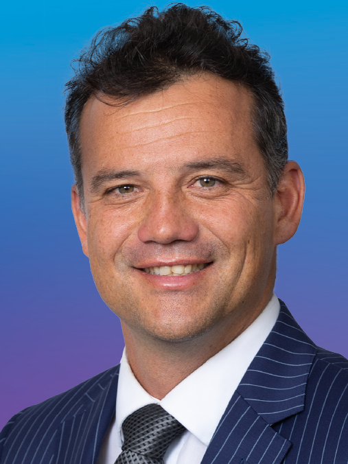

Why do you think that voting is important?
I think voting is important because it is just one more way for us to remember that "the world is something that we make, and [we] could just as easily make it differently."
It is important to remember that we are creating the world in everything that we do: we might as well do so on purpose.
What advice would you give to people who are hesitant to vote?
I get it! It can be difficult to see the point of voting, especially when it feels like one vote will not matter, there is so much conflicting information, and you are not sure anyone has the right ideas anyway. My advice is to MAKE SURE you are registered before the 25 October; if you are not registered by then, you cannot vote this year. You don't want to miss out, so you might as well register just in case. Before you vote, think about what matters to you. Do you think it is most important that you agree with a candidate on important issues (the environment, economy, etc)? Is it important that they seem "relatable" to you, that they get where you are coming from? Or do you just try to find whoever you think is the smartest person in the room? The point is that it is YOUR decision. You get to decide your values, and you get to turn those values into your vote.
To feel more confident, ask your school for some information about how voting works in New Zealand: did you know that you get 2 votes here? And not all candidates and Parties are trying to get you to vote for them twice! For example, I am an Opportunity Party candidate, but I am not too concerned about the candidate/electorate vote. But I am asking for people to Party Vote Opportunity. Understanding the difference will help you feel much more confident :)
Why do you think that voting is important?
Voting is important because it is your power to choose who will represent you and act in your best interests and the best interests of your loved ones.
Politics affects us in many aspects of our day to day lives – for example through the cost of housing or transport or study, through access to jobs or education or healthcare, or through how healthy our environment is and how well prepared we are for the impacts of climate change.
What advice would you give to people who are hesitant to vote?
You don’t need to know everything about all policies in order to vote – it’s important for you just to have your say and vote for a representative or party with aligned values who you trust to represent you.
There is a lot of fear and misinformation out there, but there are also good representatives with strong values who genuinely care about the communities they serve.
It’s particularly important to make sure you are enrolled to vote in this election by the 25th October, as the current government has now removed the right to enrol after that date or on election day itself.
Youth enrolment numbers are currently low, so if young people turn out in force this election there is a very real chance that you will have a great impact on the shape of the next government and the policies which will impact your life over the years to come.
Francisco Hernandez is currently a Green List MP based in Otepoti, Dunedin.
Why do you think that voting is important?
Voting is a privilege and many people worked exceptionally hard to give women, non-landowners, and other groups the vote. Central government makes laws and collects and spends taxes on health, education, looking after the vulnerable, prisons, courts, environment and more. Different political parties have different views on how to prioritise this spending and what laws to make. Voting contributes to these decisions by choosing the party that best aligns with your values. In NZ votes count because we have mixed member proportional representation so you have two votes – one for the electorate MP and one for the party.
Rachel Brooking is currently the MP for Dunedin.
About Bianca:
I'm Bianca Beebe, a public health researcher and labour organiser who wants to build a sovereign, solarpunk future for all of us in New Zealand.
For me, that means creating a society in which everyone's basic needs are guaranteed, so the incredible talent in this country can be spent developing new inventions and businesses--not just grinding it out to pay rent.
I'm asking for you to give your party vote to Opportunity Party this election because we want to use technology to benefit the environment, invest in your great ideas, and protect our democracy (which includes making the voting age 16!).

The Southland candidate for The Opportunity Party is Bianca Beebe.
About Joseph:
Joseph was born in Hawke’s Bay and grew up in the country.
Joseph left school without any qualifications and later went to university, obtaining an honours degree in Law. He graduated from university on the same day as his youngest sister, the first in their family to do so.
Living in Central Otago, Joseph became a senior trial lawyer and built his own law practice, appearing in courts throughout the South.
In 2017 he was appointed by the Deputy Solicitor General to the Crown Prosecution Panel for the Invercargill Crown Solicitor. Joseph has also been appointed by the Court as a Youth Advocate.
Joseph has been MP for Southland since 2020.
He is Chair of the Social Services and Community Select Committee and a member of the Regulations Select Committee.
Joseph has been an Army reservist and volunteer firefighter.
He has three children with his wife Silvia. In his spare time, he likes to ski, mountain bike, and spend time with his family.

The Southland candidate for The Opportunity Party is Bianca Beebe.